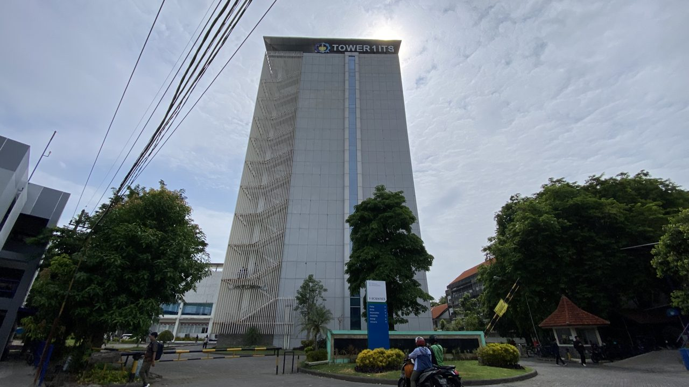
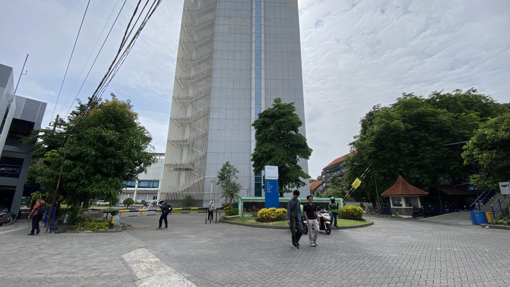
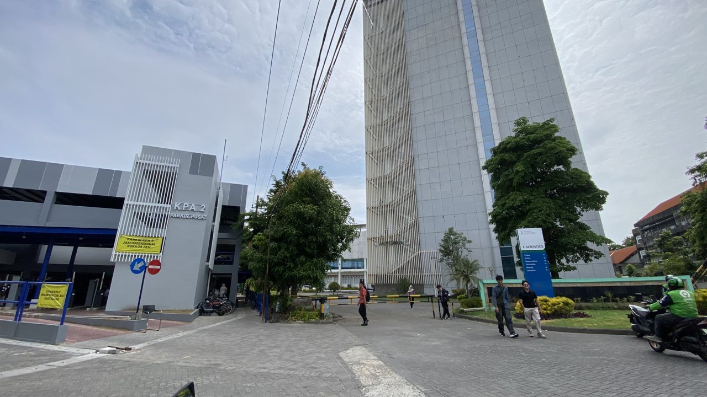
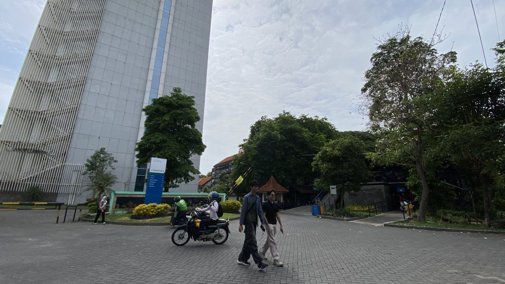
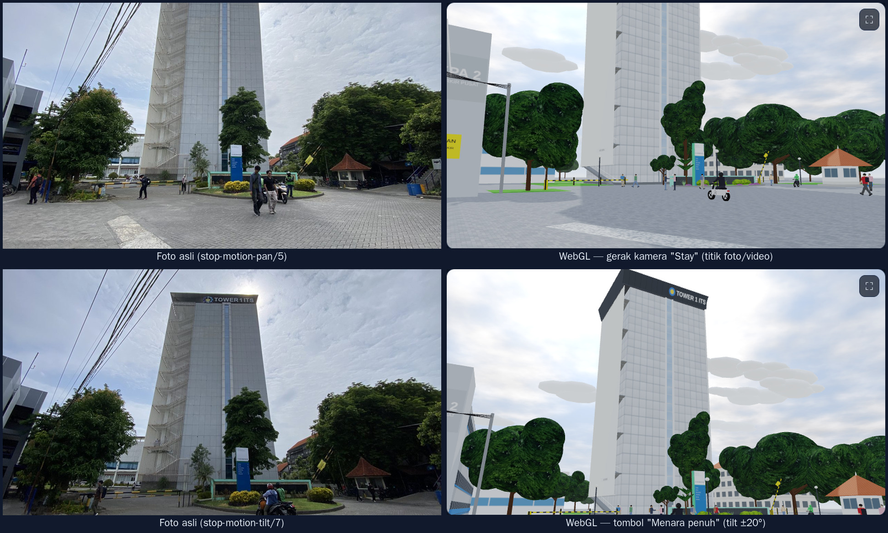

Foto objek asli
Hasil survei lapangan, Senin 2 November 2026 pukul ±08:45 WIB (dari metadata foto).




Video objek asli
Tujuh klip dengan teknik gerak kamera berbeda. Setiap teknik ditiru oleh tombol "Gerak kamera video" di scene WebGL.
Foto asli vs scene WebGL
Pilih foto di kiri: kamera WebGL akan berpindah ke sudut pandang yang mirip. Klik canvas untuk mengaktifkan kontrol keyboard.
Browser ini tidak mendukung WebGL2. Gunakan Chrome, Edge, Firefox, atau Safari versi terbaru.
Animasi
Waktu & siklus siang-malam
Lighting
Texture & tampilan
Kamera
Gerak kamera video
Petunjuk kontrol keyboard & mouse
Diagram tree hubungan antar objek
Diagram ini dibuat otomatis dari scene graph yang sedang berjalan (traversal
node.children di ui.js), jadi pasti sama dengan struktur kode.
Anak yang berulang diringkas (×N). Klik ▸ untuk membuka cabang.
onUpdate)
×N node yang dibuat dengan loop
Pembagian tugas
Kode dipisah per modul supaya bisa dikerjakan paralel. Kedua anggota memahami seluruh modul (lihat PENJELASAN.md).
| Anggota | File / modul | Objek & fitur |
|---|---|---|
| Anggota A [Nama Anggota A] |
Survei lapangan | Foto, 7 video (stay, pan, tilt, zoom, dolly), stop-motion pan & tilt |
building.js |
Tower 1: badan menara, 13 lantai + strip kaca, louver + tangga darurat zig-zag, pita atap "TOWER 1 ITS"; gedung KPA 2, gedung rendah, gedung lama | |
texture.js |
Texture fasad panel, kaca, paving herringbone, papan totem, crop foto asli (daun, paving) | |
index.html, style.css |
Halaman utama, galeri foto/video, pengujian kemiripan dengan foto asli | |
| Anggota B Raynald Ramadhani Fachriansyah |
main.js, shaders.js, scene-graph.js, geometry.js, math3d.js |
Arsitektur WebGL2, render loop, shadow map, shader Phong/Blinn-Phong, scene graph, primitif |
camera.js |
Kamera first-person, smoothing, preset, gerak kamera video, auto-tour, orbit, ortho | |
lighting.js, environment.js |
Matahari mengorbit, siklus siang-malam, lampu titik, langit, awan, tanah, tiang listrik | |
tree.js |
Pohon hierarki batang → cabang → daun, goyang angin, efek tumbuh | |
student.js, vehicle.js |
Mahasiswa berjalan (sendi bahu/siku/pinggul/lutut), motor dengan roda berputar | |
props.js, ui.js |
Taman, totem F-SCIENTICS, palang parkir otomatis, pos satpam, lampu taman; panel UI & diagram tree |
Konsep yang diterapkan
Transformasi
Translasi: mahasiswa berjalan di jalur, motor, awan. Rotasi: matahari mengorbit, sendi lengan & kaki, roda, palang parkir, pohon bergoyang. Skala: pohon tumbuh, daun "bernapas", glow matahari, louver (skala non-seragam).
Hierarchical modelling
world = parent × local, dengan local = T × Ry × Rx × Rz × S. Rotasi di bahu menggerakkan lengan bawah dan tangan; goyangan batang menggerakkan seluruh cabang dan daun.
Kamera
View matrix dari lookAt(eye, eye + arah(yaw, pitch), up), proyeksi perspective/orthographic, smoothing k = 1 − e−s·dt, dan gerak pan/tilt/zoom/dolly seperti video.
Lighting
Per-fragment: ambient hemisphere + diffuse Lambert + specular Phong/Blinn-Phong. Matahari = directional light, lampu taman = point light. Shadow mapping dengan PCF, emissive malam, dan fog.
Texture
UV dalam meter agar grid panel tidak melar, texture prosedural canvas 2D, crop foto asli, mipmap, filtering (T), wrapping (G), dan emissive map untuk jendela yang menyala di malam hari.
